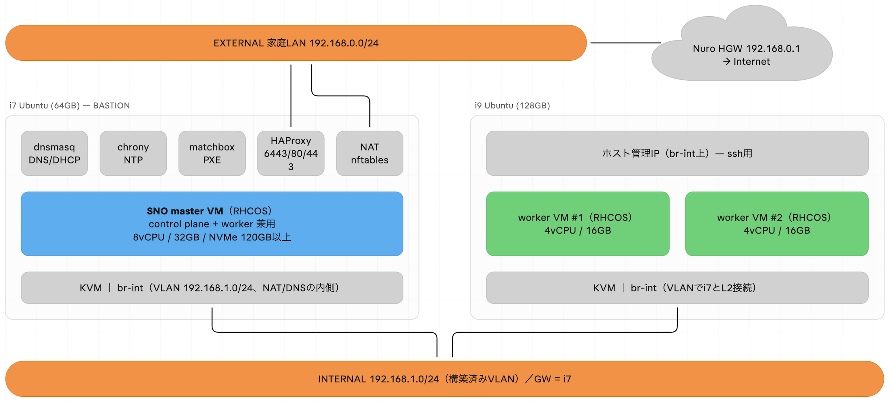

📙 概要¶
2026/11/17公開 2026/11/17更新
🟩 システム構成【ドラフト】¶
Claudeによるお薦めのデザインは下図の通り。「PVはCephかな」等は後回し。
NETWORK
EXTERNAL: 192.168.0.0/24, HGWを経由してインターネットに繋がる
INTERNAL: 192.168.1.0/24, vlanで構築している
メモ
PXE bootにしないと、再構築に苦労するので、最初から入れておく。

🟩 Step 1: KVM環境構築¶
MASTER 1台と、WORKER 2台はKVMのVMで構成する
各VMはINTERNAL LANに接続される
INTERNAL LANはVLANで構築されている。2台のベアメタルからは専用の物理NICで接続されるが、L2SWはEXTERNAL LANと共用している。
🟩 Step 2: PXE環境構築とRHCOSインストール¶
各VMはPXEブートが設定されていて、初期起動時、RHCOSがインストールされる。2回目以降は、インストールされたRHCOSで立ち上がる
BOOTプロトコルはDNSMASQとMATCHBOXの連携で実現される。
TFTPは【調査中】。TFTPでRHCOSインストールメディアが転送される。
BOOTプロトコルやTFTPプロトコルは到達力が弱い。地理的に遠いVMはPXEブートが向いてないが、家庭内LANなので問題ない。